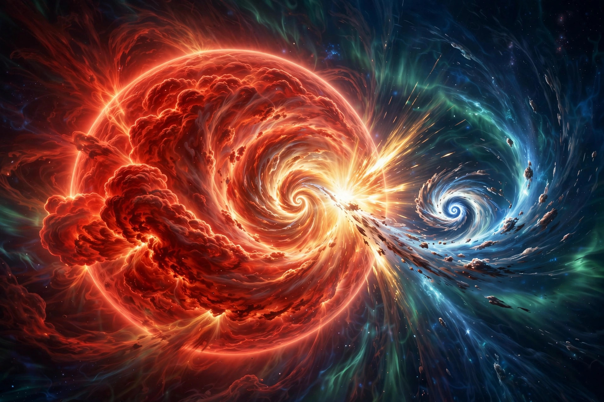

November 20, 2026 · 2 min read
A Giant Star Swallowed Its Companion — and Astronomers Watched It Happen

Illustration by The Discovery Wire
A Giant Star Swallowed Its Companion — and Astronomers Watched It Happen
Astronomers have theorized for decades that giant stars engulf their companions. This time, they watched it happen, step by step.
The system sits about 2.5 million light-years away, on the outskirts of the Andromeda Galaxy. The larger star — about seven times the Sun's mass and 18,000 times brighter — was dying. As its core ran out of fuel, it swelled into a puffy supergiant some 350 times the Sun's diameter, and its outer envelope reached out and swallowed the smaller companion, a star about 70% the Sun's diameter that had been orbiting at roughly the Earth–Mars distance.
A seven-year spiral, then a bomb
Researchers first detected the brightening in 2018, when the engulfment began. Over the next seven years, the smaller star spiraled inward through the giant's loosely bound envelope toward its core. Toward the end of 2025, it finally merged with the core — triggering an eruption a million times brighter than the Sun.
Lead author Viraj Karambelkar, a NASA Hubble Fellow at Columbia University, called it a "unification event": the violent collision, he said, "set off a bomb inside the star."
The team spotted the pair in data from the infrared WINTER telescope at Palomar Observatory and NASA's NEOWISE space telescope, then followed the merger with the SPHEREx and James Webb space telescopes and ground-based observatories. The results were published in Nature.
Why this one was different
Stellar mergers have been observed before — but from small, compact stars whose merger was nearly inevitable once they touched. This giant was different: so puffed up, with such a loosely bound envelope, that the merger might or might not have happened. An engulfed companion can sometimes release enough energy to blow the envelope away entirely, leaving the core behind. Here, the companion made it all the way in.
And the ending may not be an ending at all. The researchers say the merger may have produced a rejuvenated star — a dying star given a new lease on life. They nicknamed the merged star Bao, after the steamed buns, a nod to its auto-assigned eruption name, AT2025abao.
Source: Reuters, Nov 20, 2026. Paper: Karambelkar et al., Nature (2026).
Source: Reuters — read the original report
← Back to latest stories